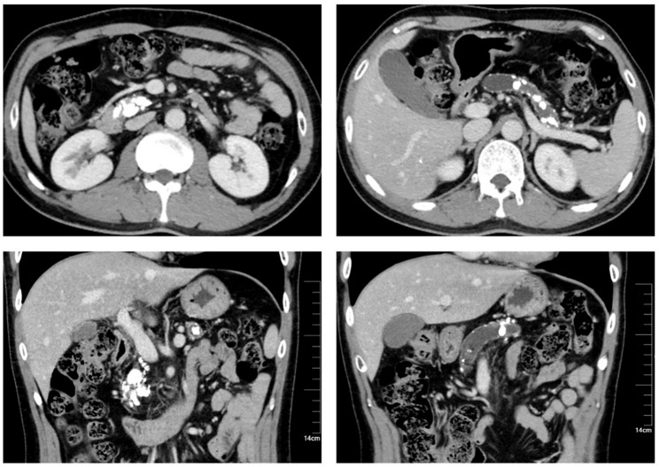

Ficha del catálogo
Pancreatitis crónica
- Sistema
- Digestivo
- Modalidad
- TC
- Región
- Páncreas
- Dificultad
- Intermedio
Es la inflamación persistente del páncreas con destrucción progresiva del parénquima y sustitución por fibrosis, que conduce a insuficiencia exocrina y endocrina. El consumo crónico de alcohol es la causa más frecuente en el adulto, seguido de causas obstructivas, genéticas y autoinmunes. Se manifiesta con dolor recurrente, esteatorrea y diabetes.
Técnica
La tomografía sin contraste es especialmente útil para demostrar las calcificaciones, que son el signo más específico, y se completa con fases tras el medio de contraste para valorar el parénquima, el conducto y las complicaciones. La colangiorresonancia con estimulación secretora muestra con detalle el conducto principal y sus ramas laterales y detecta cambios en fases más tempranas.
Qué observar
- Calcificaciones parenquimatosas y litos dentro del conducto pancreático
- Dilatación irregular del conducto principal con estrechamientos alternantes, aspecto de cadena de lagos
- Atrofia del parénquima con adelgazamiento glandular difuso o segmentario
- Pseudoquistes de tamaño y localización variables, incluidos los extrapancreáticos
- Estenosis del colédoco distal en su trayecto intrapancreático con dilatación biliar por encima
- Trombosis de la vena esplénica con varices gástricas y esplenomegalia
Hallazgos
La glándula aparece atrófica y con calcificaciones groseras distribuidas por el parénquima y por el conducto, que a su vez se dilata de forma irregular. Los pseudoquistes son frecuentes y pueden comprimir estructuras vecinas. La afectación del colédoco distal produce una estenosis larga y afilada con dilatación biliar, patrón distinto del corte abrupto que suele causar la neoplasia. La trombosis esplénica genera una hipertensión portal segmentaria con varices gástricas aisladas y bazo aumentado.
Perlas
El reto diagnóstico más frecuente es distinguir una masa inflamatoria focal de un adenocarcinoma. Ayuda el llamado signo del conducto penetrante, en el que el conducto pancreático atraviesa la lesión de forma continua aunque estrechada, hallazgo que favorece el origen inflamatorio, mientras que en la neoplasia el conducto se interrumpe de forma abrupta. Ante la duda persistente se recurre al ultrasonido endoscópico con toma de muestra, ya que la coexistencia de ambas entidades es posible.
Diagnóstico diferencial
- Adenocarcinoma de páncreas
- Masa hipovascular con interrupción abrupta del conducto, atrofia distal y contacto vascular.
- Pancreatitis autoinmune
- Glándula difusamente aumentada con halo periférico hipodenso, conducto estrechado sin dilatación marcada y sin calcificaciones típicas.
- Neoplasia mucinosa intraductal del conducto principal
- Dilatación difusa del conducto con papila prominente y con contenido mucinoso, sin calcificaciones parenquimatosas.
- Páncreas graso y atrofia senil
- Sustitución grasa difusa con conducto de calibre normal y sin calcificaciones ni dolor.
- Pancreatitis del surco duodenopancreático
- Engrosamiento del tejido entre la cabeza pancreática y el duodeno con quistes en la pared duodenal.
Simuladores
- Calcificaciones vasculares o ganglionares proyectadas sobre el lecho pancreático
- Conducto pancreático prominente en pacientes de edad avanzada sin enfermedad
- Material de contraste retenido en el duodeno que simula calcificaciones
Por modalidad
- TC
- Es la mejor para demostrar calcificaciones y para valorar complicaciones vasculares y colecciones
- RM
- La colangiorresonancia detecta cambios ductales tempranos y valora las ramas laterales, con mejor caracterización del parénquima
- US
- El ultrasonido endoscópico es muy sensible para los cambios precoces y permite tomar muestras dirigidas
Protocolo
Tomografía con adquisición sin contraste para detectar calcificaciones, fase pancreática a los 40 a 50 segundos y fase portal a los 70 segundos, con cortes finos y reconstrucciones coronales que sigan el eje del conducto. En resonancia se emplean T2, colangiorresonancia y estudio dinámico tras gadolinio, con secuencias tras estimulación secretora cuando se desea evaluar la reserva exocrina y el detalle ductal.
Clasificación
Errores frecuentes
- Prescindir de la serie sin contraste y perder calcificaciones pequeñas
- Etiquetar como inflamatoria una masa focal sin valorar el trayecto del conducto ni el contacto vascular
- Pasar por alto la trombosis esplénica y las varices gástricas que de ella derivan

pancreatitis cronica calcificaciones cadena de lagos conducto penetrante pseudoquiste trombosis esplenica pancreas